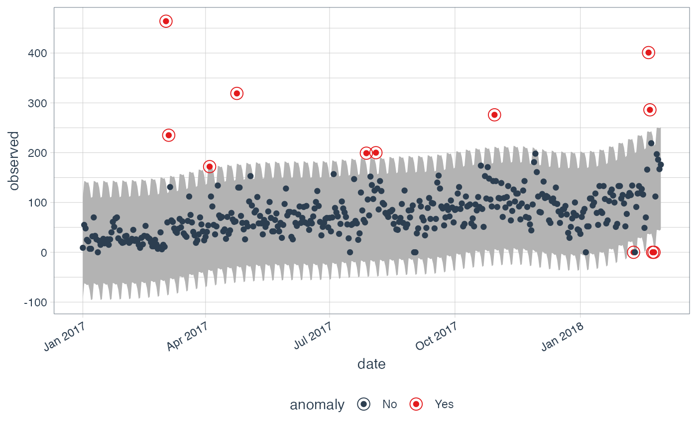
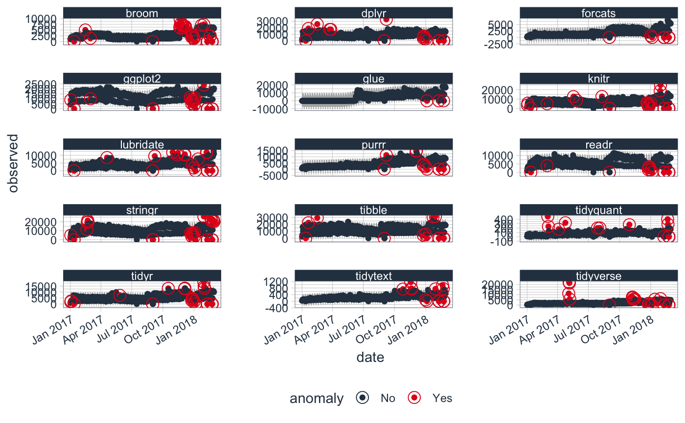

Visualize the anomalies in one or multiple time series
plot_anomalies(data, time_recomposed = FALSE, ncol = 1, color_no = "#2c3e50", color_yes = "#e31a1c", fill_ribbon = "grey70", alpha_dots = 1, alpha_circles = 1, alpha_ribbon = 1, size_dots = 1.5, size_circles = 4)
| data | A |
|---|---|
| time_recomposed | A boolean. If |
| ncol | Number of columns to display. Set to 1 for single column by default. |
| color_no | Color for non-anomalous data. |
| color_yes | Color for anomalous data. |
| fill_ribbon | Fill color for the time_recomposed ribbon. |
| alpha_dots | Controls the transparency of the dots. Reduce when too many dots on the screen. |
| alpha_circles | Controls the transparency of the circles that identify anomalies. |
| alpha_ribbon | Controls the transparency of the time_recomposed ribbon. |
| size_dots | Controls the size of the dots. |
| size_circles | Controls the size of the circles that identify anomalies. |
Returns a ggplot object.
Plotting function for visualizing anomalies on one or more time series.
Multiple time series must be grouped using dplyr::group_by().
library(dplyr) library(ggplot2) data(tidyverse_cran_downloads) #### SINGLE TIME SERIES #### tidyverse_cran_downloads %>% filter(package == "tidyquant") %>% ungroup() %>% time_decompose(count, method = "stl") %>% anomalize(remainder, method = "iqr") %>% time_recompose() %>% plot_anomalies(time_recomposed = TRUE)#>#>#### MULTIPLE TIME SERIES #### tidyverse_cran_downloads %>% time_decompose(count, method = "stl") %>% anomalize(remainder, method = "iqr") %>% time_recompose() %>% plot_anomalies(time_recomposed = TRUE, ncol = 3)